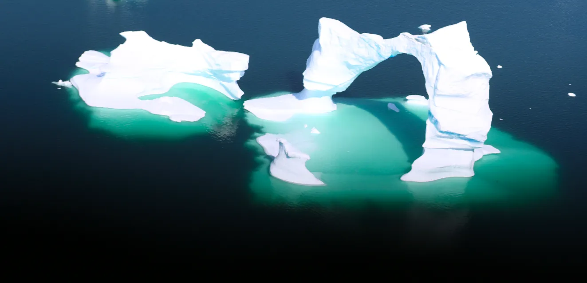
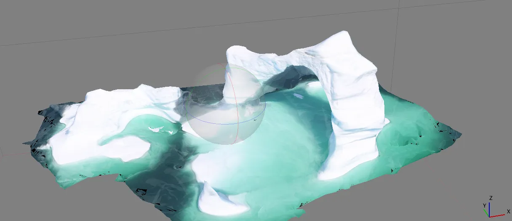

Probleme du jour : sachant que cette arche de glace fait 8m de rayon, nous avons realise un modele 3D approximatif grace a la photogrammetrie. A partir de ce modele, nous savons que le volume aerien de l'arche de glace est de 22 500 m^2 : quelle est la masse totale de l'iceberg, y compris sa base sous-marine ?
En premier une des photos, et en second le modele 3D issu des photos.


Qui saura nous calculer la masse de ce "petit" monstre ? Le volume emerge de cette arche glacee a ete calcule a 22 500 m^2, grace a notre technique de photogrammetrie et de modelisation 3D, mais il reste a deduire la masse totale...